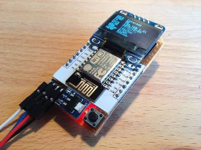

2016-03-24 - Nº 47

Editorial
Aqui está a Newsletter Nº 47 no seu formato habitual. Agora às quintas-feiras. Se gostar da Newsletter partilhe-a!
Todas as Newsletters encontram-se indexadas no link.
Esta Newsletter tem os seguintes tópicos:
Esta semana a NEC apresentou uma tecnologia biométrica que usa o som para distinguir o formato da cavidade auditiva individualmente. Faleceu Andrew S. Grove, que foi uma das figuras mais influentes no mundo da tecnologia e em particular na Intel. Uma pesquisa financiada pela NASA concluiu que o eixo da Lua alterou-se 5 graus à cerca de 5 mil milhões de anos. A Texas Instruments lançou o novo micro-controlador MSP430FR2311 que incorpora um amplificador de trans-impedância com baixa queda configurável. Esta tecnologia permitirá poupança de energia em aplicações de medida e controlo consumindo em média menos 20 vezes que as alternativas.
Na Newsletter desta semana apresentamos diversos projetos de maker e na rubrica "Documentação" apresentamos quatro livros (eBooks) que podem ser descarregados livremente e que esta semana são sobre Aplicações de Java em Linux, introdução a redes de computadores, Perl moderno, produzindo software open source, inventando jogos de computador com Python e OpAmps para todos.
Lembramos que no próximo dia 2 de Abril vamos participar no Dia do Arduino. Irá igualmente realizar-se a Workshop - Constrói o teu CSEduino cujas inscrições já estão abertas.
 João Alves ([email protected])
João Alves ([email protected])
O conteúdo da Newsletter encontra-se sob a licença  Creative Commons Attribution-NonCommercial-ShareAlike 4.0 International License.
Creative Commons Attribution-NonCommercial-ShareAlike 4.0 International License.
Novidades da Semana ^
-
" NEC Corporation today announced the development of a new biometric personal identification technology that uses the resonation of sound determined by the shape of human ear cavities to distinguish individuals. The new technology instantaneously measures (within approximately one second) acoustic characteristics determined by the shape of the ear, which is unique for each person, using an earphone with a built-in microphone to collect earphone-generated sounds as they resonate within ear cavities. This unique method for extracting features is useful for distinguishing individuals based on acoustic characteristics and enables rapid and highly accurate recognition (greater than 99% accuracy)."
-
"Intel announced that the company’s former CEO and Chairman Andrew S. Grove passed away today at the age of 79. Present at Intel’s 1968 founding with Robert Noyce and Gordon Moore, Andy Grove became Intel’s President in 1979 and CEO in 1987. He served as Chairman of the Board from 1997 to 2005. Both during his time at Intel and in retirement, Grove was one of the most influential figures in technology and business, writing best-selling books and widely cited articles, and speaking out on an array of prominent public issues."
Ancient Polar Ice Reveals Tilting of Earth’s Moon
"Did the “man in the moon” look different from ancient Earth? New NASA-funded research provides evidence that the spin axis of Earth’s moon shifted by about five degrees roughly three billion years ago. The evidence of this motion is recorded in the distribution of ancient lunar ice, evidence of delivery of water to the early solar system."
-
"Texas Instruments customers can now extend battery life in sensing and measurement applications with the new MSP430FR2311 microcontroller (MCU), the industry’s only MCU with an integrated low-leakage transimpedance amplifier (TIA) consuming just 50pA of current. The new microcontroller – an expansion of the ultra-low-power MSP430™ MCU family – offers 20 times lower leakage than alternative voltage and current sensing solutions and provides the configurability of analog and memory technology without sacrificing battery life or board space. Highly integrated MCU solution with configurable analog helps developers simplify their schematics and save PCB space by up to 75 percent. The MSP430FR2311 MCU allows developers to connect to a wide range of sensors with its analog integration including ADC, op amp, comparators and TIA. This solution also integrates Ferroelectric Random Access Memory (FRAM) technology and eliminates the need for an onboard crystal in a single 3.5 mm x 4 mm package. This single chip solution will reduce design complexity and overall project development time."
Ciência e Tecnologia ^
This article can be printed on a hair
"A nanotechnology breakthrough from DTU revolutionizes laser printing technology, allowing you to print high-resolution data and colour images of unprecedented quality and microscopic dimensions. Using this new technology, DTU researchers from DTU Nanotech and DTU Fotonik have reproduced a colour image of Mona Lisa which is less than one pixel on an iPhone Retina display. The laser technology allows printing in a mind-blowing resolution of 127,000 DPI. In comparison, weekly or monthly magazines are normally printed in a resolution equivalent to 300 DPI."
New device uses carbon nanotubes to snag molecules
"Engineers at MIT have devised a new technique for trapping hard-to-detect molecules, using forests of carbon nanotubes. The team modified a simple microfluidic channel with an array of vertically aligned carbon nanotubes — rolled lattices of carbon atoms that resemble tiny tubes of chicken wire. The researchers had previously devised a method for standing carbon nanotubes on their ends, like trees in a forest. With this method, they created a three-dimensional array of permeable carbon nanotubes within a microfluidic device, through which fluid can flow."
Unsynchronized Structured Light
"Various Structured Light (SL) methods are used to capture 3D range images, where a number of binary or continuous light patterns are sequentially projected onto a scene of interest, while a digital cam- era captures images of the illuminated scene. All existing SL meth- ods require the projector and camera to be hardware or software synchronized, with one image captured per projected pattern. A 3D range image is computed from the captured images. The two synchronization methods have disadvantages, which limit the use of SL methods to niche industrial and low quality consumer ap- plications. Unsynchronized Structured Light (USL) is a novel SL method which does not require synchronization of pattern projec- tion and image capture. The light patterns are projected and the images are captured independently, at constant, but possibly dif- ferent, frame rates. USL synthesizes new binary images as would be decoded from the images captured by a camera synchronized to the projector, reducing the subsequent computation to standard SL. USL works both with global and rolling shutter cameras. USL enables most burst-mode-capable cameras, such as modern smart- phones, tablets, DSLRs, and point-and-shoots, to function as high quality 3D snapshot cameras. Beyond the software, which can run in the devices, a separate SL Flash, able to project the sequence of patterns cyclically, during the acquisition time, is needed to enable the functionality."
ORNL cell-free protein synthesis is potential lifesaver
"Lives of soldiers and others injured in remote locations could be saved with a cell-free protein synthesis system developed at the Department of Energy’s Oak Ridge National Laboratory. The device, a creation of a team led by Andrea Timm and Scott Retterer of the lab’s Biosciences Division, uses microfabricated bioreactors to facilitate the on-demand production of therapeutic proteins for medicines and biopharmaceuticals. Making these miniature factories cell-free, which eliminates the maintenance of a living system, simplifies the process and lowers cost."
Self-heating lithium-ion battery could beat the winter woes
"A lithium-ion battery that self heats if the temperature is below 32 degrees Fahrenheit has multiple applications, but may have the most impact on relieving winter "range anxiety" for electric vehicle owners, according to a team of researchers from Penn State and EC Power, State College."
Novel 4D printing method blossoms from botanical inspiration
"Materials science and mathematics combine to enable the printing of shapeshifting architectures that mimic the natural movements of plants. A team of scientists at the Wyss Institute for Biologically Inspired Engineering at Harvard University and the Harvard John A. Paulson School of Engineering and Applied Sciences has evolved their microscale 3D printing technology to the fourth dimension, time. Inspired by natural structures like plants, which respond and change their form over time according to environmental stimuli, the team has unveiled 4D-printed hydrogel composite structures that change shape upon immersion in water."
Documentação ^
A documentação é parte essencial do processo de aprendizagem e a Internet além de artigos interessantes de explorar também tem alguma documentação em formato PDF interessante de ler. Todos os links aqui apresentados são para conteúdo disponibilizado livremente pelo editor do livro.
Livros
Java™ Application Development on Linux
"Linux is the fastest-growing Java development platform because it saves money and time by serving as a platform for both development and deployment. But developers face significant platform-specific challenges when managing and deploying Java applications in a controlled production environment. Written for Java and Linux developers alike, “Java™ Application Development on Linux®” is the hands-on guide to the full Java application development lifecycle on Linux."
An Introduction to Computer Networks
"General-purpose computer-networking textbook, complete with diagrams and exercises. It covers the LAN, internetworking and transport layers, focusing primarily on TCP/IP. Particular attention is paid to congestion; other special topics include queuing, real-time traffic, network management, security and the ns simulator."
-
"Modern Perl takes that productivity to the next level. Learn the philosophy of Perl to unlock the language's full power. Explore the best the CPAN has to offer. See how new features of Perl 5.20 and 5.22 will improve your code and help you finish your job faster—and have more fun too. Sharpen your knowledge of tools and techniques. Hone your skills. Master every advantage Perl has to offer."
Producing Open Source Software - How to Run a Successful Free Software Project
"Producing Open Source Software is a book about the human side of open source development. It describes how successful projects operate, the expectations of users and developers, and the culture of free software. The book is released under an open copyright. You can buy it in bookstores, order copies from O'Reilly Media, or browse and download it here."
Invent Your Own Computer Games with Python
"The current crop of programming books for kids that I've seen fell into two categories. First, books that did not teach programming so much as "game creation software" or in dumbed down languages to make programming "easy". Or second, they taught programming like a mathematics textbook: all principles and concepts with application left to the reader. This book takes a different approach: show the game source code right up front and explain programming principles from the examples."
Op Amps for Everyone - (Fourth Edition)
"This book for Everyone is an indispensable guide and reference for designing circuits that are reliable, have low power consumption, and are as small and low-cost as possible. Operational amplifiers are essential in modern electronics design, and are used in medical devices, communications technology, optical networks, and sensor interfacing. This book is informed by the authors' years of experience, wisdom and expertise, giving engineers all the methods, techniques and tricks that they need to optimize their analog electronic designs."
Revistas
newelectronics - 22 March 2016
"New Electronics is a fortnightly magazine focusing on technological innovation, news and the latest developments in the electronics sector. Downloadable as a digital page turner or pdf file, or offered as a hard copy, the New Electronics magazine is available in a format to suit you."
Modelos 3D ^
Com a disponibilidade de ferramentas que permitem dar azo a nossa imaginação na criação de peças 3D e espaços como o thingiverse para as publicar, esta rubrica apresenta alguns modelos selecionados que poderão ser úteis.
Braille Alphabet ( customisable )
I made customisable Braille Alphabet.
You can customise character detail. I don't know it can be utilized.
Enclosure With Screw Stand-offs
Here is a customizable enclosure that includes screw stand-offs and counter-sunk holes in the lid. The parameters for height, width and depth are all external dimensions, so to figure out your internal dimensions you will have to account for the thickness as well.
Tip: Once you have the STL for the size of the enclosure you want, import that into TinkerCAD and use "hole" objects to "cut" openings into the enclosure before you print it. With careful measuring and planning, you can save yourself the trouble of having to do it Post-Printing.
Parametric Micro Tools Holder
I needed to organize my workspace (which is not expendable), and I decided to repack some of my tools boxes. Here you'll found how I arrange my drills or mini tools accessories. Now I can slide it in a drawer or a small shelf. The way it has been design allows you to pick up easily any tool from a row. Enjoy! :)
Projetos Maker ^
Diversos Projetos interessantes.
OV7670 Without FIFO Very Simple Framecapture With Arduino, Black/white
"This instructable is for all the people struggling to just take a picture/grab a frame with their OV7670 without FIFO. I made this purely as an introduction. I do not yet posses the necessary coding skills to make a really great description. This was made to hopefully save some people a lot of the hours I used researching the OV7670 wanting to see if it worked."
-
"Recently I started making more PCBs for my prototypes, and for me, the worst thing is ironing PCB covered with laser printout. Of course it works, and if you make it often, can be really good at this. Some of my iron-boards was looking great, while other forcing me to make them again. I thought, lets give a try to make PCB process more pleasant. I went to the shop and bought Tracer TRL-A3. Originally I wanted A4, but at Saturday guys have only this, and it was cheaper than smaller one. I've got even 10 sheets for laminating, I've used 2 to check it lamiantor is working, and started disassembling process :)"
stm32f407 discovery board as a 100MHz FM transmitter using crystal feedback trick
"This is a very simple hack, the aim of this project is to transmit a song stored in STM32F407 flash memory over air by FM at 100MHz. At first you can have a look at the below video, a weird demo taken through my mobile phone. A fixed song is repeatedly transmitted from the stm32f407 discovery and it received on a mobile phone FM radio which is tuned at 100MHz."
-
"By vmetro known indicators that are incorporated in appliances and audio devices that serve to indicate or display an audio signal level. It is also interesting to note the decorative potential of this device, which we can assemble in many applications: HI-FI amplifiers, portable amplifiers, automotive equipment, stereos PC, home cinema, etc ... On the market several specific integrated circuits assembly VU meters, in this project we decided on the AN6884 , being an integrated easy to find and a very low price. This circuit is capable of controlling five LEDs with only a few external components. For a stereo version AN6884 we need two integrated circuits with their associated components."
RFM69 to MQTT gateway using ESP8266
"Ive mentioned my plans for this project during the IoT hangout session few months ago, it has finally materialized as working prototype. The blocker so far was the lack of ESP8266 RFM69 driver and free time on my end, so Ive teamed up with Andrey Balarev to solve this. Andrey is an IoT enthusiast + embedded systems developer and has done excellent job in porting LowPowerLabs RFM69 library for the ESP8266. He spent few weekends staring at the oscilloscope, re-writing SPI library code and managed to solve a number of challenges to get this library going. Ive bundled his driver code with MQTT to get a beautifully working prototype that forwards RFM69 traffic to MQTT and vice versa."
-
"Our cat Penny has an internal clock as accurate as NIST. She starts meowing just a minute before each of her feeding times. We used to leave a note that said "I fed Penny" but this was not always helpful in keeping track. If I saw that note at lunch, I could not be certain that it meant my son fed her breakfast or my wife had just fed her lunch and Penny was trying to scam a second serving. The Arduino to the rescue! I built a box with a display and one button for each meal. Press the breakfast button and the display will show "At 8:03a Penny had BREAKFAST." The timestamp comes from a Real Time Clock module connected to an Arduino Nano. As added entertainment, the Arduino plays "Warm Kitty" through a piezo speaker."
Introducing OpenGarage: an Open-Source WiFi Garage Door Opener
"Today I am very excited to introduce you to OpenGarage an open-source, universal garage door opener built using the ESP8266 WiFi chip and the Blynk app. Ive wanted to finish this project for a while, as there have been multiple occasions where I left the house in a hurry and forgot to close my garage door, or locked myself out of the house, or had to let a friend or handyman in while I was away. Having a WiFi-based garage door opener (which I can access remotely using my mobile phone) would be super convenient. Recently as I started learning about ESP8266, I found it to be the perfect platform to help me complete this project."
-
"After messing around with an Arduino for a couple months and avidly reading instructables, I decided that I would finally publish my own. I wanted to create something that moves by itself. I also wanted to create a system that reacts to the outside environment. After some thought I decided on a simple motion follower."
OpenTrashCan: A Smart Internet Connected Trash Can
"OpenTrashCan connects to your wifi network and sends you an email when its full, talks to you, This project started out serious, then I kept thinking of funny things I wanted to make it do. The only way I could think to present it was a corny infomercial style video. The trash can uses one range sensor in the front that opens the lid when it detects motion. There is a second range sensor in the back that detects the fill level of the trash can. Speech is played using an mp3 shield, through computer speakers. "
-
"Once upon a time in December 2014 in so long, long ago, I had the idea to put together six of our freshly produced WS2812 8x8HD panels to a light cube. Thought done - with Plexiglas designed a kind of substructure and braced by means of common spacers between them. Taken a LiPo battery 850Ah, a CMOS switch and an LED-Player-S, connected together was set up the hardware. With Jinx! I have put together a few nice effects and stored on SD card. The Diamex panels own for such a structure very well, because due to the arrangement of the LEDs rhombenartigen (rotated 45 degrees) clearances for M3 attachments are possible. No other LED panel made ??an extremely useful feature. So you can work without housing, what a very special, sexy effect. The part I have shown around and after a whole-time operating Someone asked "with what kind of power source running the thing?" . I slipped in that moment out "nuclear power - Polonium" . Since that's the polonium-Cube."
-
"This instructable describes a CNC controlled robot plotter. The robot comprises two stepping motors with a pen-lift mounted midway between the wheels. Rotating the wheels in opposite directions causes the robot to pivot about the pen-tip. Rotating the wheels in the same direction causes the pen to draw a straight line. It has the following range of movements ... forward, reverse, rotate-left, and rotate-right."
Controlling the Camera direction with your Android phone
"This Instructable is about how to control your Camera direction with your Android phone using servo motors. It's very easy and also cheap that everyone can make it easily and is very interesting as well."
nRF24L01+ 2.4 GHz Wireless Connectivity with the tinyK20 Board
"Im using the tiny and inexpensive Nordic Semiconductor nRF24L01+ transceiver (see Tutorial: Nordic Semiconductor nRF24L01+ with the Freescale FRDM-K64F Board) in many projects: it costs less than $3 and allows me to communicate with a proprietary 2.4GHz protocol in a low power way"
-
"In this tutorial we will attempt to create a system that will integrate electrical hardware, software, and mechanical systems to complete the task of drink mixing automation. The final product is a drink carousel that has the capability of pouring drinks from 3 separate bottles as indicated from a user computer using USB. For the prototype designed, a Xilinx Zybo development board was used along with the Vivado Design Suite. Specific to the Zybo board is its system on chip architecture allowing us to design the FPGA hardware and software on the Zynq processor included with the Xilinx IP library. The mechanical system is comprised of a drink carousel and rubber belt attached to the continuous servo to locate the desired bottle and the standard servo is used to dispense the liquid. Be aware when reading these instructions that the purpose of this project was to design around the hardware/software platform and the documentation for the development on this board will be far more thorough than that of the mechanical system."
Float a ping pong ball at will!
"I have always been fascinated by things that are controlled wirelessly by hand motions which is probably why I own a Wii now that I'm thinking about it. But I haven't really gotten to doing any motion control of my own design before so I felt like I was missing out on some of my life goals. But no more! With the aid of some extra components like a fan, an accelerometer, and a microcontroller to do some processing, I have mastered the art of floating a ping pong ball with only my hand."
-

"Actually there are no real reasons why one should build a (mobile-)phone by himself. Especially as the simplest phone costs actually less than doing it yourself. Nevertheless, learning is very important aspect of the assembly process. Furthermore, walking around with a self-built phone sounds just very awesome idea. Most of us have our own mobile phone, so do I. After building the T-gameBoY I was looking new challenges and thought I should make myself a phone. Clearly Im not able to achieve the smartphone functionality, but calling and maybe additionally sending SMS-s would be good enough."
-
"This is a program to be run with arduino and processing on a computer, it is two-player, and controlled by the potentiometers. The piezo will play sounds, the button will perform various actions in the game, and the LEDs show the score."
Digital thermometer on OLED display using ESP8266 ESP-12E NodeMCU and DS18B20 temperature sensor
"In this instructable I will go a step further, interfacing a digital temperature sensor DS18B20 and displaying the temperature in degrees and Fahrenheit on a cheap tiny OLED display (in SPI connection mode)."
1.2V to 37V Regulated Power Supply 1.2A
"This project provides a variable output power supply ranging from 1.2 to 37 V @ 1.5 A. Uses industry populer LM317 in TO3 package for delivering variable output voltage."
-
"More than a year ago, a friend of mine asked me to write the software for his 3D Spectrum Analyser (3DSA): a device that takes as input an audio signal, and outputs its visualisation on a 3D matrix of leds."
-
"A couple of weekends ago I was in the mood to do some retrogaming and didnt know what I wanted to play so I asked for some suggestions from Twitter. I played some Castle Wolfenstein, Snake Byte, BCs Quest for Tires, and Miner 2049er on the Apple IIe and then I wanted to try some games on my Apple IIgs. Unfortunately my IIgs has had intermittent issues for a long time, and it was looking like bad RAM might be the culprit."
-
"Instead of using multiple buttons to select different function , here is a simple technique which uses only one button to select different function !!"
-
"This was a fun and simple project I made to remotely view the webcam in my living room and be able to move it around. I decided to make it, unfortunately, because I had roommates that I didn't trust. Necessity is the mother of invention, I guess. At any rate it was fun to put together and troubleshoot. I hope you enjoy!"
-
"After building my last project, I wanted to build something with an Arduino. Browsing Instructables for months I saw a LED Arduino Clock that I wanted to build. After some redesigns on my part, I set on my conquest to build this clock. First and foremost, I want to give credit to Onyx Ibex, for all his help and for the original design of the LED clock."
Remote Water Tank Level Sensor V2.0
"This project is a re-boot from a 2-year-old project to accomplish the same. The goal is to have an internet-enabled sensor mounted to a water tank which measures the amount of water in the tank and records it online. When the tank gets low, an SMS is sent to me to alert me. Additionally, at any time, I can send an SMS to inquire how much water is in the tank."
Mini Pi-Powered Arcade Machine
"The 'Instructarcade' is a self-made bartop mini arcade with controls for one player. Using the Raspberry Pi and it's official touch display, tons of uses are possible. It's mainly designed to play retro arcade games (MAME), but also emulators for many other systems like SNES, GBA, etc. run nicely. Thanks to the touchscreen also point-and-click adventures can be nicely played with ScummVM. Via WLAN any smartphone can be used as virtual controller, so up to 4 players can play."
-
"This project combines wireless communication techniques and video image processing in order to create a device capable of tracking and filming a specific target. The target will be paired with the Zybo board via Bluetooth Low Energy (BLE). The target will transmit accelerometer data via BLE to the Zybo board. The board will then analyze the received data, and control a servo with a camera mounted on it to track, follow, and film the target. The video output of the camera could be viewed live on an attached monitor."
-

"I decided to make my own version of an arduino person counter after viewing Login258 tripwire and electro18 IR person counter. This is a great device that can be used to count the number of people who visit a store, detect if a soccer ball complete passed over a goal line, or even security. Additionally, two such setups could be used to construct a speedometer to measure the speed of cars down a one lane road. There are a number of devices that you could make with this or by making minor adjustments to the setup."
Personal Assistant with Telegram & Arduino.
"A few months ago I heard about a project that used an instant messenger bot to create a system that would automatically process and organize pizza's orders sent by the costumers via Whats app. I was like...wow! Give that man a cookie! So I took some time to explore around bots and how to code them. With a little bit of research I discovered that using a Telegram bot would make it easier for me to program my bot since there is a lot of support for the makers that have interest in bots. And Because for this project the Telegram app is used to send commands there is zero android programming"
PC Mouse Made With Arduino Uno and Joystick
"I recently began tinkering with my new Arduino Uno and decided to find an application for a PS2 joystick module. I thought it would be nifty to turn my Arduino into a joystick controlled mouse for my PC."
DC Motor Speed and Direction Controller
"DC Motor Speed and direction controller project based on L293D H-Bridge and 555 Timer IC. 555 Generate PWM and L293D works as output driver. The 293D provides bidirectional drive current up to 600mA a voltage from 5V to 12V. L293D includes the output clamping diodes for protections."
AMSC - Arduino Multimedia and Skype Controller
"* Imagine yourself watching a movie and, out of nowhere, someone calls you on Skype and because of that you get destracted and you need to rewind the movie to concentrate again. That kind of things shouldnt happen. Thats the reason why I made this program. Sometimes we all want something to control multimedia apps in a fast and easy way, as knowing the current playing song, pause it to view a video or listen to something else or just control the volume of the app. Now we can! And it also has a menu to display CPU and RAM usage and a Skype menu to make and receive calls! Oh, yes. And it is super easy to make! What could be better?!"
-
"This is my very first instructable, i've been in this page for a couple of years now, and this is the first BIG project i tackle on, so i decided that after i finish it i was going to publish it so, here it is! My name is Aoshido and i come from Argentina, if you like to know more about me, check my profile, because this instructable is not about me (sadly) but about the Laser Engraver i built. So without further ado , here's how it goes!"
Mobile Station prototype for Environmental Data Capture ("a Mars Rover emulator")
"This project is entitled for the development of a fully functional mobile prototype the Rover Station, responsible for environmental data capture as Temperature, Humidity and Luminosity. The idea is in the future agregate other functions to emulate what would be a Mars Rover emulator. This prototype is for education purposes only and was part of my Capstone Project at COURSERA - University of California, Irvine "An Introduction to Programming the Internet of Things (IOT)" course."
-
"Very simple and useful project to understand the working of Li-Fi, you can also make your own Li-Fi device with a bit more modifications to the design and code provided. You actually need two arduino's, one to send and the other to receive to make it more fun."
-
"In this post we introduce simple and flexible, regulated low voltage power supply unit. This power supply has provision for 4 outputs such as 1.5V, 1.8V, 2.5V and 3.3V. We mainly build this low voltage power supply unit to test (and power-up) low voltage MCUs, CPLDs and radio receivers. For this power supply we choose 1.8V, 2.5V and 3.3V to get it compatible with most of the LVTTL/LVCMOS devices. Other than that, we include 1.5V because there are several analog ICs are available for that voltage level."
-

"During experiments with digital voice mode in hamradio I discovered a nice project describing an adapter for D-Star, DMR and other digital modes based on an Arduino Due and a little PCB to be put on top. This unit is called the Multimode Digital Voice Modem or MMDVM. It seems that this is getting quite popular because hard- and software is Open Source."
SMD Soldering Reflow Oven (ControLeo2 Based)
"I'm sure you've seen a ton of these by now. If you are a maker then this is one tool that you MUST have. Its convenient fast and you can even do a small production batch with these. If you are completely new to SMD soldering then search for reflow soldering and you'll get tons of information. This particular instructable is based on the ControLeo2 reflow oven controller by Peter Easton. This is by far the best I've come across and the software is fully open source. It can control up to 4 solid state relays (SSRs), a servo motor (to open the door for cooling at the end of reflow process) and a buzzer. Most impressive is that it is self-learning. That means, it can adapt to your oven heating elements and their behavior. Thanks Peter for putting this out there! The electronics hardware design is based off Brian Barrett's design. He is super helpful and I suggest reading his build guide (multiple times). Thanks Brian! :)"
Internet-of-Things Power Meter

"The Internet-of-Things Power Meter (IPM) is a device fixed on top of the regular household power meter that provides detailed information about the electricity usage. Modern power meters have a LED blinking every time a Watt is used, the IPM detects these flashes using a light sensor, counts them, saves the values to an SD card. Later the data is stored to the cloud. Usually power companies provide very rough electricity usage data, the IPM provides data with a minute resolution. Knowing the household electricity usage allows to extrapolate statistics and can give precise numbers about the costs. "
Improved Arduino Rotary Encoder Reading
"I wanted to use a low cost rotary encoder as an input mechanism for one of my upcoming projects and was initially bewildered by the code options available to take readings from the rotary encoder and determine how many "detents" or cycles the encoder had clicked past and in what direction. I think my main sketch will need to use most of my Arduino's memory so I am avoiding the various available encoder libraries which seemed to be difficult to make work when I tried a couple of them and use far more of the code budget than the sketch-based code approaches discussed from here on."
-
"I made Alarm Clock and I made that from scratch to study. Power Supply,Clock Circuit,Chassis...."
That's all Folks!